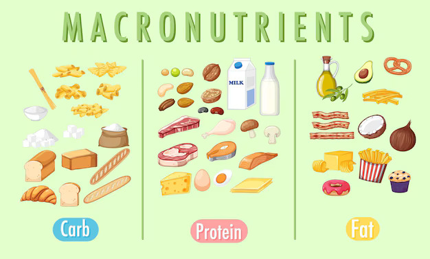

Nutrition plays a crucial role in optimizing athletic performance, affecting everything from endurance and strength to recovery and injury prevention. Here’s a detailed guide to help athletes make the most of their nutrition:
- Macronutrients

- Carbohydrates: Carbs are the primary fuel source for high-intensity exercise. They’re stored in muscles and liver as glycogen. Aim to consume complex carbs like whole grains, fruits, and vegetables. Carbs should constitute 45-65% of your total caloric intake. For endurance athletes, carbohydrate needs can increase, often reaching up to 7-10 grams per kilogram of body weight.
- Proteins: Essential for muscle repair and growth. The recommended intake is about 1.2-2.0 grams per kilogram of body weight, depending on the type and intensity of the sport. Good sources include lean meats, dairy products, legumes, and plant-based proteins like tofu and quinoa.
- Fats: Necessary for energy, especially during prolonged exercise, and for the absorption of fat-soluble vitamins. Focus on healthy fats such as avocados, nuts, seeds, and olive oil. Fats should make up about 20-35% of your total caloric intake.
- Micronutrients

- Iron:Vital for oxygen transport in the blood. Athletes, especially females and those who follow vegetarian diets, need to ensure adequate iron intake. Good sources include red meat, poultry, lentils, and fortified cereals.
- Calcium and Vitamin D: Important for bone health. Calcium can be obtained from dairy products, leafy greens, and fortified non-dairy milks. Vitamin D, which can be synthesized from sunlight, is also important for calcium absorption; consider supplementation if you have limited sun exposure.
- Antioxidants: Help in reducing oxidative stress from intense exercise. Vitamins C and E, found in fruits, vegetables, and nuts, can be beneficial.
- Hydration

- Water: Essential for maintaining fluid balance and preventing dehydration. Drink water throughout the day and increase intake based on exercise duration and intensity
- Electrolytes: Sodium, potassium, and magnesium are lost through sweat. For activities lasting more than 60 minutes, consider sports drinks or electrolyte supplements to replenish these essential minerals.
- Timing of Nutrition

- Pre-Exercise: Eat a balanced meal with carbs and protein about 3-4 hours before exercise. For a quick pre-workout snack, opt for easily digestible carbs and a small amount of protein, like a banana with a spoonful of peanut butter.
- During Exercise: For activities over an hour, consuming carbs (e.g., sports drinks, energy gels) can help maintain energy levels.
- Post-Exercise: Focus on recovery with a meal or snack that includes both protein and carbs to replenish glycogen stores and repair muscles. A ratio of 3:1 carbs to protein is often recommended.
- Special Considerations

- Meal Frequency: Eating smaller, more frequent meals can help maintain energy levels and support metabolism. This approach also helps in avoiding digestive discomfort during training.
- Individual Needs:Nutritional needs can vary based on the sport, training intensity, and individual metabolism. Personalized plans created with the help of a sports nutritionist can be especially beneficial.
- Avoiding Common Pitfalls: Be cautious of excessive supplementation, over-reliance on sports drinks, or extreme dieting. Focus on a balanced diet rather than drastic measures.
- General Tips
- Quality of Foods: Prioritize whole, minimally processed foods for maximum nutrient density and overall health.
- Listening to Your Body: Pay attention to how different foods and timing affect your performance and recovery. Adjust your diet based on personal experiences and feedback from your body.
- Consistency and Balance: A well-rounded, consistent approach to nutrition is more effective than periodic changes. Ensure that your diet supports overall health and not just immediate performance goals.
By integrating these nutrition tips into your training regimen, you can enhance your athletic performance, support recovery, and achieve your fitness goals more effectively.